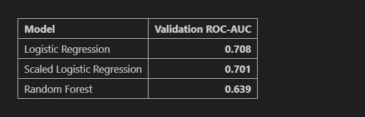

Project case study
Project Details
Explore the project's goals, methods and results.
Project Overview
Objectives
Methodology
Results and Learnings
Project Visualizations
Visual insights from transaction analysis, model evaluation, and feature importance.
